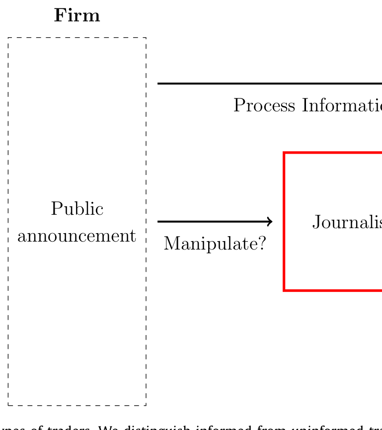
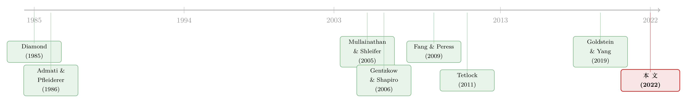

新闻里那条「负面偏向」，竟是公司自己「逼」出来的
本文读的是 Goldman, Martel & Schneemeier (2022, JFE)：当公司只能借记者之口把公告「送」到一部分交易者眼前时，记者会理性地把版面更多地留给负面、且更少被操纵的消息；记者的存在反而抬高了公司操纵公告的动机，却又在平均意义上让股价更有信息含量。一个看似矛盾的结论，背后是一条环环相扣的博弈链条。
1 引言：一条人人都知道、却没人讲清楚的常识
每个做实证的人大概都熟悉这样一组「风格化事实」(stylized facts)：财经媒体的报道是偏负面的（Tetlock, 2007；Garcia, 2013；Niessner & So, 2018），媒体覆盖会影响股票横截面收益（Fang & Peress, 2009），记者甚至能对市场产生因果冲击（Engelberg & Parsons, 2011），而且投资者还会对媒体「翻炒」的旧闻 (stale news) 做出反应（Huberman & Regev, 2001；Tetlock, 2011）。
证据汗牛充栋。可一个尴尬的事实是：理论几乎是空白的。我们有一大堆关于「记者写了什么、市场怎么反应」的回归，却几乎没有一个模型能告诉你——记者为什么这么写、公司又会因此怎么做。媒体、交易者、公司三方的均衡互动，在文献里始终是一团迷雾。
这篇论文想做的，就是给这团迷雾点上第一盏灯。它的出发点朴素得近乎常识：
美国有成千上万家公司向 SEC 递交 10-K，全世界免费可看；可有几个散户真有时间逐份去读？
于是必然有一个「中间人」——财经记者——替读者筛选。她翻过海量公告，只挑她认为对读者最有价值的那几条登出来。读者只看得到被报道的那部分信息。这就是全文的逻辑地基。听上去平平无奇，但正是从这块地基上，作者推出了一连串并不显然、甚至反直觉的结论。
接着，一个自然的问题是：如果记者是「替读者把关」的，那她到底会把关掉什么、放行什么？而公司又会怎样反过来「钻」这个把关机制的空子？我们一步步来。
2 经济框架：三个玩家，一条信息的「独木桥」
模型里有三类交易者，外加一个公司经理 (firm manager, \(F\)，「他」) 和一位记者 (journalist, \(J\)，「她」)：
- 知情交易者 (informed traders)：质量为 1 的连续体，能观测到所有公司公告以及关于payoff 的私人信号；
- 读者 (readers, \(R\))：质量为 \(\chi > 0\)，看不到公司公告，只能通过记者的报道获知信息；
- 流动性交易者 (liquidity traders)：出于与信息无关的原因交易。
所有交易者风险中性、竞争性交易。三类交易者里，唯独「读者」被困在一条信息的独木桥上——没有记者的报道，他们就是「聋的」。这正是图 1 想传达的核心区分：是否能直接观测到公司公告，把交易者一刀切成了两个世界。

Figure 1: Three types of traders. We distinguish informed from uninformed
这个设定的妙处在于：它把「媒体」从一个被动的「传声筒」，变成了一个有策略的守门人。读者的交易量、公司的操纵动机、乃至最终的股价，全都被记者那个「报还是不报」的决定牵动着。
3 模型：把「操纵—报道」的博弈一步步拆开
这是一篇彻头彻尾的理论论文，模型是它的心脏。我们就按时间线 \(t \in \{0,1,2,3\}\) 把它拆开。
3.1 基本面与信号：为什么「坏消息」天生更可信
风险资产是对公司清算股利 \(d_\theta\) 的索取权，\(t=3\) 兑付。基本面冲击 \(\theta\) 等概率取 \(L\) 或 \(H\)，且不失一般性地设 \(d_H > d_L\)。作者把payoff 不确定性 (payoff uncertainty) 定义为
$$ \sigma_d = \tfrac{1}{2}\,(d_H - d_L). $$
\(t=0\)，经理观测到 \(\theta\)，并对外发布一个公开信号 \(s_F \in \{L, H\}\)（你可以把它想成一份财报或新闻稿）。关键在于信号的生成结构：
- 若基本面高（\(\theta = H\)），信号一定准： $$ P(s_F = H \mid \theta = H) = 1. $$
- 若基本面低（\(\theta = L\)），经理可以选择操纵强度 \(m \in [0,1]\)。以概率 \(m\) 操纵成功、把信号粉饰成 \(H\)；以概率 \(1-m\) 操纵失败、只能如实报 \(L\)： $$ P(s_F = H \mid \theta = L) = m,\qquad P(s_F = L \mid \theta = L) = 1 - m. $$
把这两行并排看，一个深刻的不对称就浮出来了：\(s_F = L\) 是完全信息的——它只可能在 \(\theta = L\) 时出现（基本面高的公司绝不会去自曝坏消息）。而 \(s_F = H\) 是含糊的——它既可能来自真正的好基本面，也可能来自一次成功的操纵。
记住这一点：坏消息天生「干净」，好消息天生「可疑」。这条不对称是后面所有反转的总开关。
3.2 经理的问题：操纵的成本与收益
经理操纵需付出私人成本，作者取最简单的线性形式 \(C(m) = c_m\, m\)，\(c_m > 0\)。经理选择 \(m\) 来最大化公司预期股价减去操纵成本（注意：只有在 \(\theta = L\) 时他才面临这个权衡，因为 \(\theta = H\) 时信号本就准）：
这就是论文的方程 (1)。它看着简单，但 \(\mathbb{E}[p\mid\theta=L]\) 这一项里藏着记者的策略——操纵能把股价拉多高，取决于这条被粉饰的公告有没有被报道、被多少读者看到。这正是「操纵」与「报道」两个决定纠缠在一起的接口。
3.3 记者的问题：一杆「读者利益」的秤
记者在 \(t=1\) 观测到 \(s_F\)，决定报（\(D_r=1\)）或不报（\(D_r=0\)）。若报，她原样登出 \(s_J = s_F\)；若不报，\(s_J = \varnothing\)。假设 1 把她的目标钉死了：
记者的报道决定，是为了最大化读者的预期效用，减去一个私人报道成本 \(c_r\)。
注意作者刻意不让记者去「煽情」或加「媒体偏见」——她是一个善意的信息传递者，只想尽可能准确地报道。这与 Mullainathan & Shleifer (2005)、Gentzkow & Shapiro (2006) 那类「记者主动迎合读者信念、主动注入偏见」的政治媒体模型，形成了根本区别。这里的偏见，是记者想消除却消除不掉的。
记者的取舍由两股力量决定。其一，报道给读者带来的效用增益——读者看到报道才能据此交易、赚到交易利润。其二，一个独立的随机机会成本 \(c_r\)，服从 \([0, \bar c_r]\) 上的均匀分布（可理解为「去报道另一家公司」的吸引力）。于是均衡里就自然生出一个报道概率：报道发生，当且仅当读者效用增益超过这次的机会成本 \(c_r\)。
把读者的效用增益记为「信息价值」。报道概率 \(\propto\) 这条公告的信息价值有多高。而一条预期被操纵得越厉害的公告，读者据它交易的「含金量」越低，信息价值越小——所以越脏的公告，越不容易被报。
4 反转：负面偏向，是公司自己「喂」出来的
现在把三块拼起来，论文最漂亮的几个结论就接连出现了。
反转一：报道偏向负面，而且是「内生」的。 回到 §3.1 的不对称——\(s_F = L\) 是完全信息的，读者拿到它就能精准定价，信息价值高且不打折；\(s_F = H\) 却可能掺了水，读者会理性地怀疑它被操纵，据它交易时自动收手，信息价值因而被「预期操纵程度」一路压低。于是：
- 正面消息以一个正的概率被报道，且该概率随预期操纵程度上升而下降；
- 负面消息以更高的概率被报道——因为它根本不依赖操纵。
换句话说，同一天里所有公告中，越负面的越可能上头条。这恰好为 Tetlock (2007)、Garcia (2013)、Niessner & So (2018) 反复记录的「媒体偏负面」提供了一个理性解释——不需要诉诸读者的损失厌恶或「if it bleeds it leads」的心理学叙事。
反转二：记者的存在，反而把公司「逼」得操纵更多。 这一步最反直觉。直觉上，多一双盯着你的眼睛，公司应该更老实才对。可在这个模型里恰恰相反：读者只根据记者提供的信息交易。记者一旦报道，就等于把一批新的、易受操纵信号影响的交易者（读者）拉进了市场。报道放大了操纵的回报——经理粉饰出的 \(s_F=H\) 能影响的人变多了，于是他更有动力去操纵。报道与操纵，在均衡里是结伴出现的。
反转三：操纵更多，价格却更「干净」。 这是收尾处最关键的一跳。既然操纵增加了，价格不该更失真吗？不。因为读者是理性的——他们对操纵程度形成正确的预期 \(\hat m\)（均衡里 \(\hat m = m\)），所以股价平均而言并不系统性偏离。更进一步，知情交易者的信息会部分地通过价格泄露出来，让读者在某些情形下能反推、纠正被操纵的信号。最终，记者的存在带来的是价格偏离已实现现金流的程度下降——作者称之为价格质量 (price quality) 的提升。被媒体覆盖更多的股票，定价反而更有效率。
别误读「价格质量上升」。它不是说被报道的那条个股当下定价更准——恰恰相反，正面新闻被报道后，短期股价会轻微高估（反映那点操纵偏差），随后回落到真实值。这条时间序列上的「过度反应 → 回归」与 Tetlock (2011) 的发现一致。价格质量是平均意义上的、跨公司的改善。
5 一个延伸：当记者学会了「调查」
基准模型里，记者只是个「传声筒」，不去戳穿操纵。但作者在 Section 4 给了她一个调查记者 (investigative reporter) 的新角色：她能以一定概率识别并澄清公司的操纵。结论很优雅——公司会预期到这层调查，从而事先就少操纵；而且记者的报道概率随其调查技能上升，并且当公司被预期操纵更多时，记者调查的动机更强。这把「新闻业能否自我净化」这个问题，第一次放进了一个能算的均衡里。
6 文献脉络
这条线的源头，是一批关于公司自愿披露的经典理论：Diamond (1985) 论公司最优的信息释放，Admati & Pfleiderer (1986, 1988) 开创了「信息买卖」的市场，Fishman & Hagerty (1989) 把披露与价格效率连了起来。沿着这条线，近年一批文献把公司披露放进有「精明交易者 + 流动性交易者」的市场中研究其对价格质量的影响（Goldstein & Yang, 2017 的综述；Gao & Liang, 2013；Han et al., 2016；Goldstein & Yang, 2019）。

另一条平行的线，是媒体偏见的理论：Mullainathan & Shleifer (2005) 的「新闻市场」与 Gentzkow & Shapiro (2006) 的政治偏见——但在这两篇里，记者是主动选择制造偏见的。本文的立场恰恰相反：偏见是记者想消除却消除不掉的副产品，且分裂成两种——一种是事后偏见 (ex post bias)（记者更愿报负面），一种是事前偏见 (ex ante bias)（公司把公告写得比真相更光鲜）。
还有第三条线索值得一提：把记者换成评级机构，这套「策略性中间人 + 操纵 + 声誉」的结构就成了信用评级文献（Bolton et al., 2012；Cohn et al., 2018；Frenkel, 2015）。本文与它们的关键分野在于——是记者、而非公司，决定哪些公告该被公开。这一个看似微小的建模选择，导出了一整套不同的预测（关于评级机构如何「看穿」噪声，可参见《当价格在说谎：评级机构凭什么「看穿」市场的噪声》）。
至于「披露与价格质量」的张力，这个博客里也已有几篇邻近的文章可对照——比如《披露越「漂亮」，价格越「糊涂」？》讲的是更多披露未必带来更聪明的价格，《把坏消息主动说出口》讲的是公司主动披露坏消息的动机，而《「旧闻」为什么还能再骗市场一次？》则正面回应了 Tetlock (2011) 的「旧闻」之谜。本文的贡献，是把「谁来决定公开」这件事，第一次显式地交给了记者。
7 评论与延伸（Q&A + 研究方向）
(a) 几个可能的疑问
Q：「记者存在 → 操纵更多」会不会只是一个建模假设的产物，而非真实机制？
一半一半。它确实依赖一个清晰的假设：读者只根据记者的报道交易、且会被操纵信号影响。作者也坦承（脚注 4），若再加一组「无论报不报都会盯着公告交易」的交易者，记者的存在会进一步放大操纵动机。所以这个机制的方向是稳健的，但其量级取决于「有多少交易者的注意力真的被记者垄断」——这是个实证问题。
Q：与政治媒体的「偏见」模型（Mullainathan-Shleifer、Gentzkow-Shapiro）到底差在哪？
差在偏见的来源。那两篇里记者主动注入偏见去迎合读者信念；本文里记者是善意的、想准确报道，偏见是均衡的副产品。而且本文的偏见有两副面孔：事后的（偏报负面）与事前的（公司粉饰）。财经新闻的「有用性」标准（帮读者赚钱）与政治新闻（迎合信念）根本不同，这正是作者坚持用「读者交易利润」而非「声誉/迎合」作目标函数的理由。
Q：「价格质量上升」与「单条新闻后股价高估」矛盾吗？
不矛盾，但极易混淆。单条正面新闻被报道后，短期价格会轻微高估再回落（与 Tetlock, 2011 一致）；而价格质量是跨公司、平均意义上价格对已实现现金流偏离的缩小。一个是时间序列上的局部偏差，一个是横截面上的平均改善。
Q：为什么负面消息「不依赖操纵」这件事如此关键？
因为信号结构里 \(s_F = L\) 只在 \(\theta = L\) 时出现——基本面好的公司没有动机自曝坏消息（脚注 9 专门论证：经理若藏起坏消息，反会完全暴露 \(\theta=L\)）。于是坏消息天生完全信息、信息价值不打折，记者自然更爱报。整条「负面偏向」都挂在这条不对称上。
Q：记者的目标函数（最大化读者交易利润）现实吗？
这是个基准 (benchmark)，作者也承认现实中存在「quid pro quo」——记者有时会迎合被报道的公司（Dyck & Zingales, 2003；Call et al., 2018）。但他们认为「报道对读者有用的新闻」对财经记者是一阶重要的。把声誉、广告金主等动机加进来，是自然的下一步。
Q：模型是二元的（\(\theta, s_F \in \{L,H\}\)），结论会不会被这个粗结构绑架？
二元结构主要是为了可解（沿用 Chen et al., 2007；Strobl, 2013；Cohn et al., 2018；Gao & Zhang, 2019 的传统），作者声称对「payoff 含一个额外不可预测成分」的设定是稳健的。但「报道概率随操纵单调下降」这类比较静态在连续信号下是否还干净，值得用一个连续版本去验证。
(b) 几个可能的研究问题与提案
1. 把这套「守门人」模型搬到公司债/信用市场。 - 【经济故事】股票有铺天盖地的媒体覆盖，公司债却高度不透明、由少数交易商和评级机构「守门」。如果把记者换成卖方研究/评级机构这个守门人，「报道偏向负面 + 操纵增加 + 价格质量上升」的三件套在信用利差上会怎样重写？信用市场里「坏消息天生可信」的不对称可能更强（违约是硬事件）。 - 【可行性】中。理论改造直接；实证可用 TRACE 成交 + 评级/新闻覆盖，识别难点在于「覆盖」的内生性，需要类似 Peress (2014) 的报纸罢工式外生冲击。
2. 外资持有人作为「第四类读者」。 - 【经济故事】本文把交易者按「能否直接看到公告」二分。一个自然的扩展：外资投资者因语言、时区、本地媒体可达性，天然更依赖（少数）国际财经媒体的二手报道——他们就是放大版的「读者」。那么媒体覆盖的跨境差异，是否会让外资持仓更高的公司面临更强的操纵动机、却又更高的平均价格质量？ - 【可行性】中。需要 FactSet/EPFR 的外资持仓 + 跨国媒体覆盖数据；识别可借助「某国财经媒体进入/退出某市场」的事件。结论方向有理论支撑，但「外资=读者」的映射需要谨慎论证。
3. 调查记者的「净化」效应有没有实证对应物？ - 【经济故事】模型预测：记者调查技能越强，公司事前操纵越少、覆盖概率越高。能否用调查性财经报道的兴衰（如某些深度报道媒体的进入/裁员）作冲击，检验被其覆盖的公司是否随后降低了语言操纵（用 Loughran-McDonald 可读性、Huang et al. 2014 的语气指标度量）？ - 【可行性】高。文本指标成熟、媒体人事变动可观测，DiD 设计可行；主要挑战是构造干净的「被某调查媒体覆盖」处理组。
4. 流动性维度：媒体覆盖如何改变知情交易的价格冲击？ - 【经济故事】本文里读者的进入改变了市场的信息结构。一个未被充分展开的角落是流动性——读者涌入是否压缩了知情交易者的价格冲击、改变了 Kyle 型 λ？这能把「媒体—价格质量」与「媒体—流动性」（Peress & Schmidt, 2020）两条线缝起来。 - 【可行性】中。理论上要把本文嵌入一个有价格冲击的微观结构模型；实证需高频数据 + 新闻时间戳，识别媒体覆盖对 λ 的因果效应仍是难点。
8 我的判断
这篇论文的贡献，在于它用一个极简却自洽的均衡，把一堆散落的实证事实——媒体偏负面、记者翻炒旧闻、媒体覆盖提升定价效率——统一在了一条逻辑链上，而且给出了一个漂亮的反直觉结论：媒体既加剧了操纵，又改善了价格。最巧的一步，是把「谁决定公开」从公司手里夺过来交给记者——这个看似微小的建模选择，是它区别于整条披露/评级文献的真正分水岭。
要说担忧，集中在两点。其一是目标函数的脆弱性：整套结论建立在「记者最大化读者交易利润、且读者只看记者」之上。一旦引入广告金主、quid pro quo（作者自己也列了 Dyck-Zingales, 2003）或读者的部分知情，「负面偏向」与「操纵增加」的方向是否稳健，需要更系统的稳健性论证。其二是二元信号结构离实证有距离——真实的财报操纵是连续的、多维的（语气、可读性、披露时点），把比较静态推广到连续信号空间，才能让那些漂亮的单调性预测真正接受数据的检验。
我最想看到的下一步，是实证落地：模型给出了一组干净、可证伪的预测（报道概率随操纵下降、媒体覆盖提升价格质量、调查记者降低事前操纵），但论文本身是纯理论的。谁能找到一个对「媒体覆盖」的外生冲击（报纸罢工、媒体进入退出、调查团队裁撤），把这三条预测一一对上数据，这套理论的份量才算真正坐实。
参考文献
Admati, A.R., & Pfleiderer, P. (1986). A monopolistic market for information. Journal of Economic Theory 39(2), 400–438.
Admati, A.R., & Pfleiderer, P. (1988). Selling and trading on information in financial markets. American Economic Review 78(2), 96–103.
Bolton, P., Freixas, X., & Shapiro, J. (2012). The credit ratings game. Journal of Finance 67(1), 85–111.
Chen, Q., Hemmer, T., & Zhang, Y. (2007). On the relation between conservatism in accounting standards and incentives for earnings management. Journal of Accounting Research 45(3), 541–565.
Diamond, D.W. (1985). Optimal release of information by firms. Journal of Finance 40(4), 1071–1094.
Engelberg, J.E., & Parsons, C.A. (2011). The causal impact of media in financial markets. Journal of Finance 66(1), 67–97.
Fang, L., & Peress, J. (2009). Media coverage and the cross-section of stock returns. Journal of Finance 64(5), 2023–2052.
Fishman, M.J., & Hagerty, K.M. (1989). Disclosure decisions by firms and the competition for price efficiency. Journal of Finance 44(3), 633–646.
Garcia, D. (2013). Sentiment during recessions. Journal of Finance 68(3), 1267–1300.
Gentzkow, M., & Shapiro, J.M. (2006). Media bias and reputation. Journal of Political Economy 114(2), 280–316.
Goldman, E., & Slezak, S.L. (2006). An equilibrium model of incentive contracts in the presence of information manipulation. Journal of Financial Economics 80(3), 603–626.
Goldstein, I., & Yang, L. (2019). Good disclosure, bad disclosure. Journal of Financial Economics 131(1), 118–138.
Huang, X., Teoh, S.H., & Zhang, Y. (2014). Tone management. Accounting Review 89(3), 1083–1113.
Mullainathan, S., & Shleifer, A. (2005). The market for news. American Economic Review 95(4), 1031–1053.
Niessner, M., & So, E.C. (2018). Bad news bearers: The negative tilt of the financial press. Working paper, Yale School of Management.
Tetlock, P.C. (2007). Giving content to investor sentiment: The role of media in the stock market. Journal of Finance 62(3), 1139–1168.
Tetlock, P.C. (2011). All the news that's fit to reprint: Do investors react to stale information? Review of Financial Studies 24(5), 1481–1512.